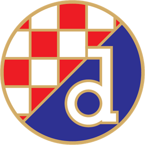

Povratak na pocetnu stranicu
Hajdukov grb - jpg format
Dinamov grb - png format

Objasnjenje picture i figure tag-a
Guzva na benzinskim pumpama jer je sve poskupilo i nece skoro biti vise
Sorry, your browser does not support inline SVG.

 Guzva na benzinskim pumpama jer je sve poskupilo i nece skoro biti vise
Guzva na benzinskim pumpama jer je sve poskupilo i nece skoro biti vise